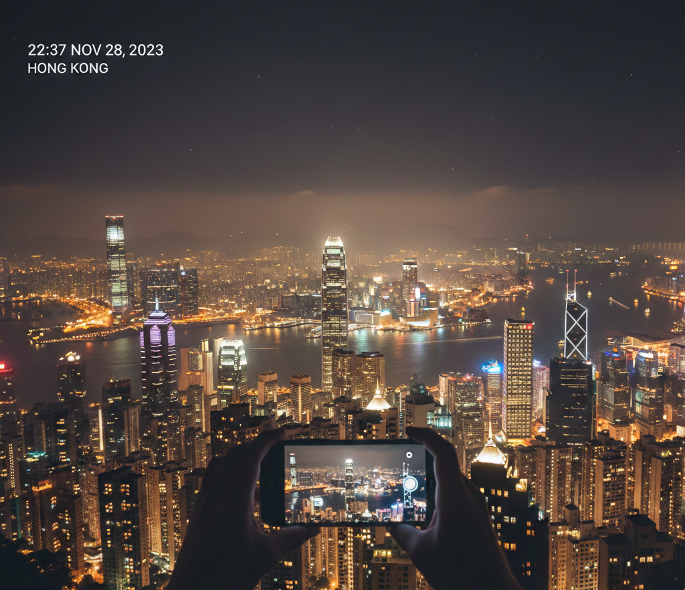
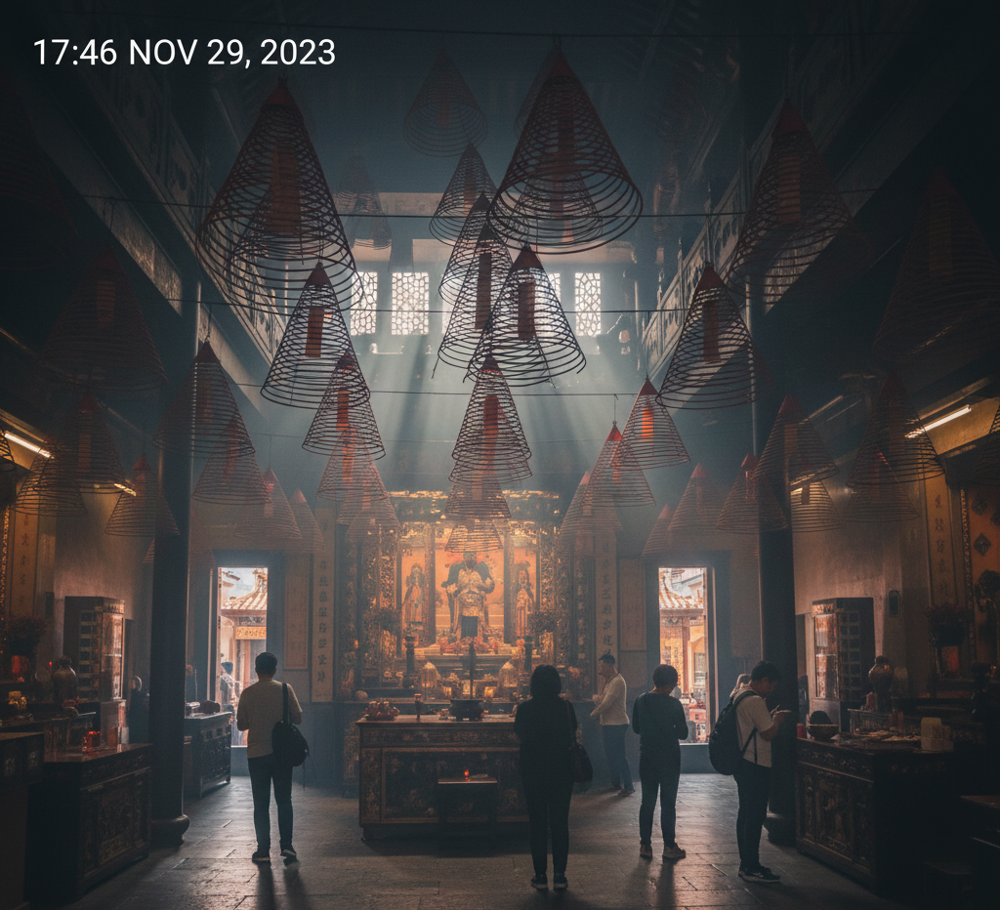
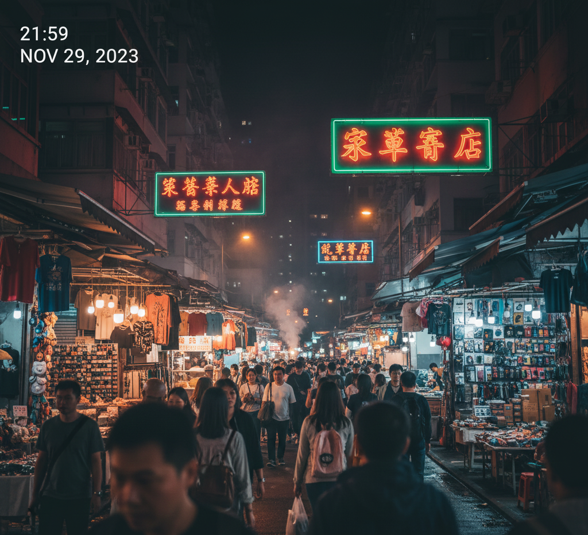
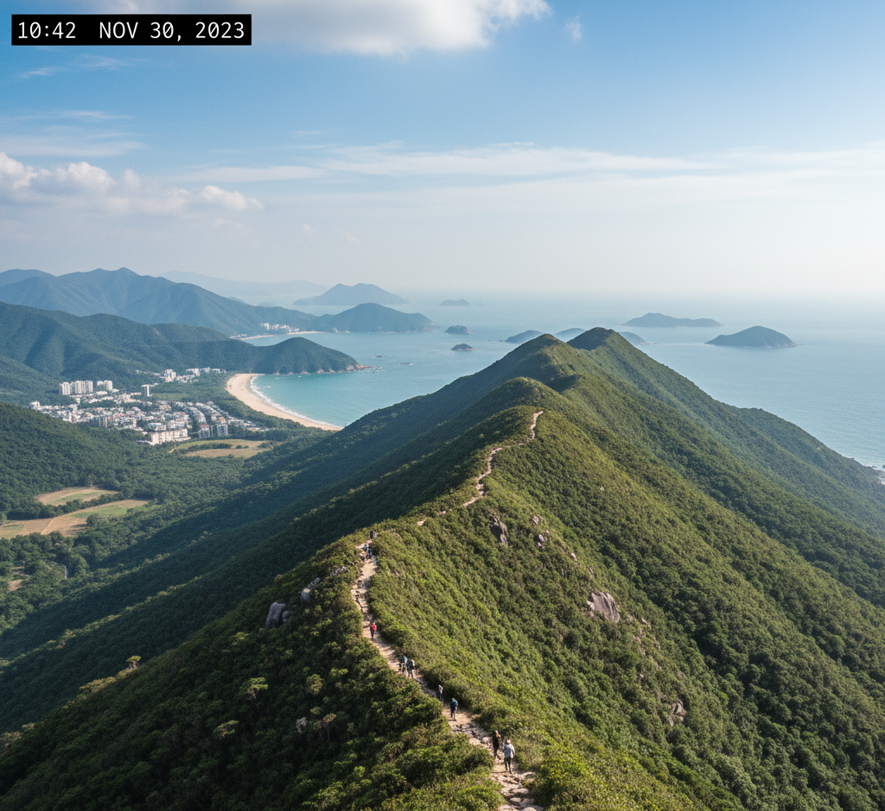

|

|
1. El Cim Il·luminat:
Victoria Peak i el Festival de Llums
No podeu anar a Hong Kong sense pujar a Victoria Peak. La vista panoràmica de la badia i els gratacels és, simplement, d'un altre món, especialment al capvespre. Vam tenir la sort d'anar-hi durant la temporada del festival "Symbolic Lights" (l'espectacle de llums Symphony of Lights). Veure la ciutat de nit, amb tots aquests edificis convertits en un llenç de colors dansants, va ser el moment "wow!" del viatge per a tota la família.
|

|
2. Una Trobada Majestuosa:
El Gran Buda Tian Tan
Per a un canvi de ritme total, vam agafar el telefèric Ngong Ping 360 (les cabines de vidre són emocionants!) per visitar el Gran Buda Tian Tan a l'illa de Lantau. És una de les estàtues de Buda assegut a l'aire lliure més grans del món. Pujar els 268 esglaons va ser un petit desafiament, però la serenitat i les vistes que es tenen des de la base són la recompensa perfecta. Els nens van quedar impressionats per la seva grandària imponent.
|
|

|
3. Aroma d'Història:
El Temple Man Mo
Enmig del modern districte de Sheung Wan, vam trobar l'oasi de calma del Temple Man Mo. Aquest temple està dedicat als déus de la Literatura (Man) i de la Guerra (Mo). El que més ens va fascinar va ser el fum dens de les espirals d'encens gegants que pengen del sostre, creant una atmosfera mística i inoblidable. És un respir històric i cultural a la jungla d'asfalt.
|
|

|
4. Tresors i Sabors:
El Mercat Nocturn
Una nit ens vam aventurar al Mercat Nocturn de Temple Street. És una festa per als sentits! Des de parades de souvenirs (on regatejar és part de la diversió) fins a la immensa varietat de street food. Vam poder provar plats locals deliciosos i sentir l'autèntic pols de Hong Kong. És el lloc perfecte per comprar records i sopar alguna cosa ràpida i saborosa.
|
|

|
5. Escapada a la Natura:
Dragon's Back
Hong Kong no són només gratacels; també té una natura espectacular. Per estirar les cames i gaudir de l'aire lliure, vam fer una petita caminada per la Dragon's Back. És una ruta relativament fàcil i les vistes del mar i les platges són meravelloses. És un pla ideal si busques una mica de pau després de l'enrenou de la ciutat.
|